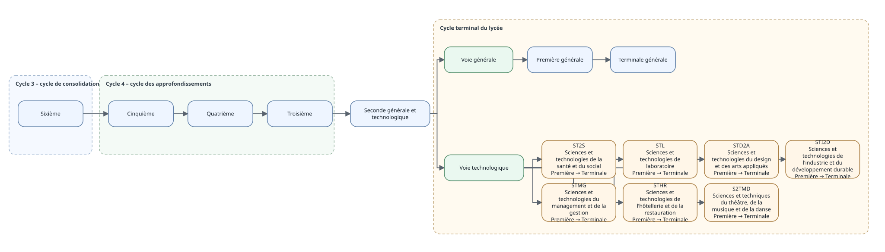

Parcours scolaires
parcours-scolaires.RmdCette vignette présente les parcours scolaires actuellement modélisés
dans eduschool. La représentation est une vue des
référentiels du package, et non une source réglementaire
indépendante.

Voies et séries modélisées
| voie_id | libelle | voie_parent_id |
|---|---|---|
| COLLEGE | Collège | |
| LYCEE_GT | Lycée général et technologique | |
| VOIE_GENERALE | Voie générale | LYCEE_GT |
| VOIE_TECHNOLOGIQUE | Voie technologique | LYCEE_GT |
| serie_id | libelle | voie_id |
|---|---|---|
| G | Voie générale | VOIE_GENERALE |
| ST2S | Sciences et technologies de la santé et du social | VOIE_TECHNOLOGIQUE |
| STL | Sciences et technologies de laboratoire | VOIE_TECHNOLOGIQUE |
| STD2A | Sciences et technologies du design et des arts appliqués | VOIE_TECHNOLOGIQUE |
| STI2D | Sciences et technologies de l’industrie et du développement durable | VOIE_TECHNOLOGIQUE |
| STMG | Sciences et technologies du management et de la gestion | VOIE_TECHNOLOGIQUE |
| STHR | Sciences et technologies de l’hôtellerie et de la restauration | VOIE_TECHNOLOGIQUE |
| S2TMD | Sciences et techniques du théâtre, de la musique et de la danse | VOIE_TECHNOLOGIQUE |
Après la seconde générale et technologique, l’orientation se fait
vers la voie générale ou vers une série de la voie technologique. La
réglementation nationale compte actuellement huit séries technologiques.
Le référentiel eduschool en modélise sept : ST2S, STL,
STD2A, STI2D, STMG, STHR et S2TMD. STAV, relevant de
l’enseignement agricole, n’est pas encore intégré au périmètre de
données du package.
La vignette Explorer une classe de 2de générale et technologique détaille cette bifurcation et les enseignements de spécialité de la voie générale.
Produire le diagramme
Le diagramme HTML correspondant peut être produit avec :
diagramme_parcours_scolaire(ouvrir = TRUE)Pour une vérification réglementaire actualisée, se reporter aux pages du ministère de l’Éducation nationale consacrées à l’orientation en seconde et à la voie technologique.